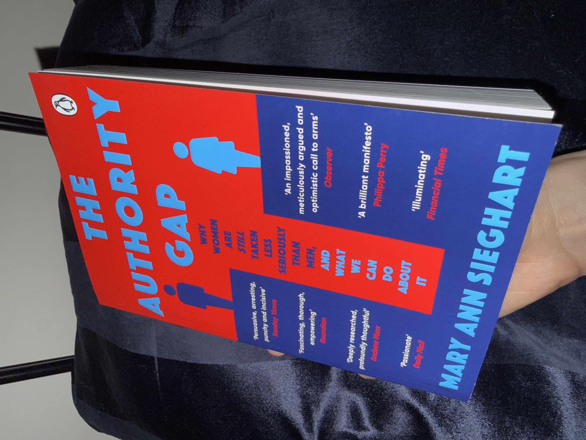
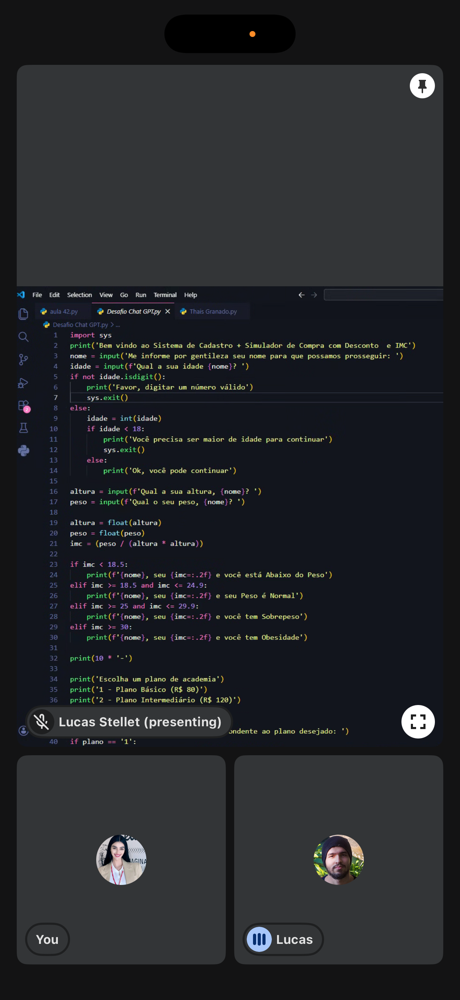
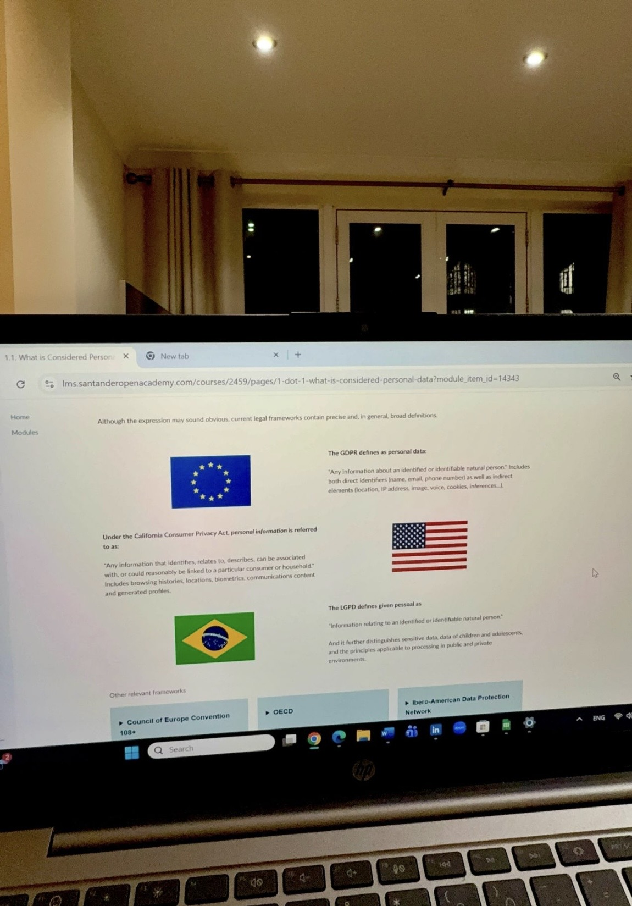
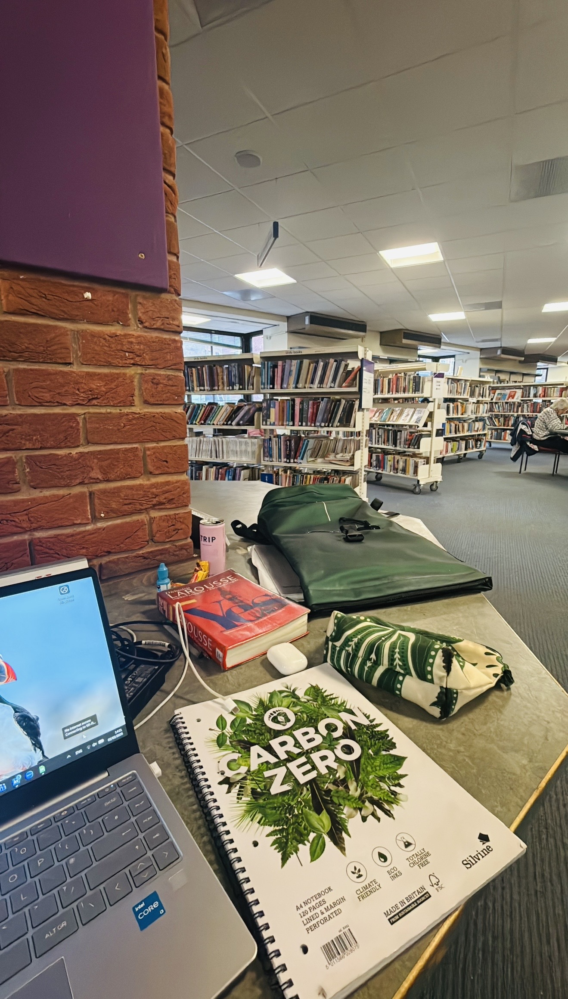

How I Learn & Build
This page reflects how I learn, study and build my professional thinking through books, technical practice, structured study and real-world observation.
I see learning as part of how I prepare, improve and understand the environments I want to contribute to.
Books & Thinking
Key idea:
Discipline and consistency are built through daily actions, not motivation.
What I take from this:
Long-term performance depends on structured habits, personal accountability and consistency over time.
Key idea:
Financial systems collapse when risk is misunderstood, underestimated or poorly communicated.
What I take from this:
Clear documentation, transparency and structured decision-making are essential in complex and regulated environments.

Key idea:
Perception, bias and communication influence how credibility and authority are assigned.
What I take from this:
Professional environments require awareness of bias, clarity in communication and confidence grounded in competence and evidence.
Learning & Skills

Building logical thinking through Python, structured problem-solving and technical practice.

Studying data protection, GDPR, LGPD and the responsibility behind personal data.
Study Environment

A study routine focused on consistency, discipline and deep work.